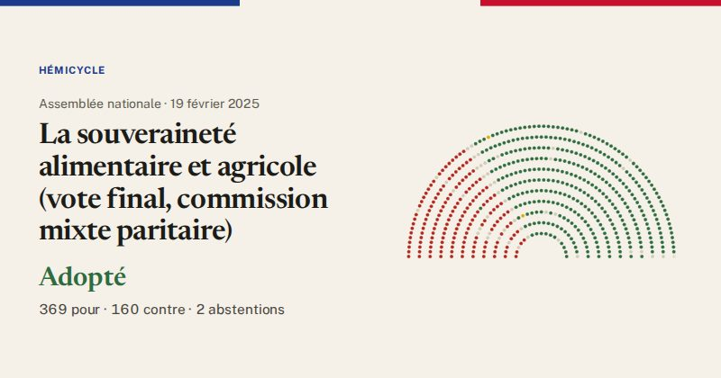

Assemblée nationale · scrutin n°844 · 19 février 2025
La souveraineté alimentaire et agricole (vote final, commission mixte paritaire)
Adopté
369pour
160contre
2abstentions

Le vote de chaque groupe
| Groupe | Pour | Contre | Abst. | Membres |
|---|---|---|---|---|
| La France insoumise (LFI-NFP) | 0 | 68 | 0 | 71 |
| GDR (communistes) | 0 | 12 | 0 | 17 |
| Écologiste et Social | 0 | 32 | 0 | 38 |
| Socialistes et apparentés | 1 | 48 | 0 | 66 |
| LIOT | 20 | 0 | 2 | 23 |
| Ensemble pour la République | 91 | 0 | 0 | 94 |
| Les Démocrates (MoDem) | 34 | 0 | 0 | 36 |
| Horizons & Indépendants | 33 | 0 | 0 | 33 |
| Droite Républicaine | 44 | 0 | 0 | 47 |
| UDR (Union des droites) | 16 | 0 | 0 | 16 |
| Rassemblement National | 121 | 0 | 0 | 124 |
| Non-inscrits | 9 | 0 | 0 | 11 |